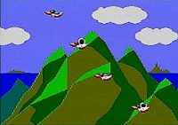

|

Review
Game Type: Light Gun Shooting

The premise is simple enough - aim your light gun at the screen and
shoot ducks, balloons, anything that moves. You have a certain number of
targets of varying types to hit per round, and as long as you nail the
minimum number you'll progress to the next stage. The Sega Light Phaser
is required to play.
Gameplay: 90/100
Basically Shooting Gallery does everything Duck Hunt does, only
better. There are five different types of targets versus, um, one for
Duck Hunt (well, two if you count clay shooting). Each of those target
types has lots of movement patterns, versus one for Duck Hunt.
There are several different backdrops, versus one for Duck Hunt. You
get the idea. SG is very fast paced, and unless you're really good a
game will rarely last more than five minutes. Even if you are good you
may never see every trick the game has to throw at you. Once you beat
the first eight stages you'll have seen all the target types, but then
they start following new and even faster movement patterns. Best of all,
the game tracks where your shot went, so if your aim is wild you'll
blast a dozen holes in the backdrop (and in your ego).
Graphics: 90/100
The graphics are rather simplistic but very colorful and the style
is appealing. The animation on the flying ducks and exploding targets is
splendid.
Sound: 60/100
The warbling music is neither annoying nor enjoyable; it's just sort
of there. Ditto with the sound effects (not that there are that many
anyway). The voice sample that announces a perfect score is extremely
grainy and was probably unnecessary.
Overall: 90/100
Forget Virtua Cop, Shooting Gallery is Sega's greatest light gun
shooter. In fact, it's one of the best gun games of all time. It
represents my favorite kind of game - simplistic but with
lots of polish and nice effects. Its speed and perfect skill curve
make it really addictive, too. If you can't find a Master System, get a
Power Base Convertor for your Genesis and simply plug the Light Phaser
into the controller port (it'll work perfectly). It's a purchase no
light gun enthusiast will regret.
|